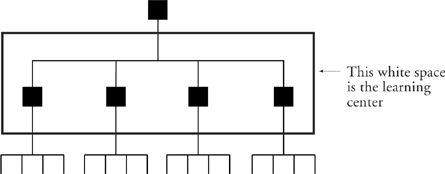

Keep Your Eye on the White Space
In the previous chapter, I asked the question “Where does change take place?” I suggested that since organizational learning and change are so closely allied, your change center would turn out to be your learning center. And I further suggested that all transformational change and learning take place in the middle of the hierarchy. But where in the middle? My precise answer is that change and learning take place in the white space at the middle of the org chart.

Significant organizational learning can’t happen in isolation. It always involves the joint participation of a set of middle managers. This requires that they actually talk to each other and listen to each other, rather than just taking turns talking to and listening to a common boss.
Companies that are best at organizational learning have vital, communicative white space. This is true all up and down the hierarchy, but particularly at the middle. The white space between peer middle managers is where reinvention happens. If the white space is not conducive of communication and joint responsibility, reinvention doesn’t happen at all.